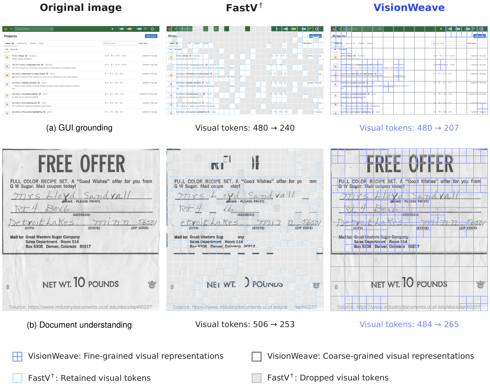

Small print in a document may need detailed representation, while a large blank region may not. Videos also contain recurring backgrounds. Turning every region into an equally dense visual-token sequence makes the language model pay for that redundancy in computation and memory.
This article reads VisionWeave: Weaving Elastic Visual Representations as a Native Capability of MLLMs, based on arXiv v1, submitted on October 6, 2026. It learns to select coarse or fine representations locally. On Qwen3.8-27B across eight benchmarks, it saves an average of 43.0% of visual tokens while retaining approximately 98.9% of native relative performance. Those figures need to be read alongside compression budgets, individual task losses, and serving conditions.
1. Topic: where should visual models spend computation?
A multimodal language model typically uses a vision transformer, or ViT, to extract patch features, then merges and projects them into visual tokens for the language model. High-resolution documents, small interface elements, and long videos can all produce long input sequences.
These tokens affect prompt processing, attention computation, and the KV cache. Lowering image resolution reduces input size, but may also erase small text, button edges, or spatial relationships. Another approach preserves the original visual input and decides which regions deserve finer representations afterward.
The central question is how to allocate representational detail according to content. Evaluation must check whether enough information survives, whether the model can use the new representations, and whether fewer tokens actually improve latency and throughput. Visual-token savings are not identical to whole-system compute savings: the vision encoder and additional modules still run.
2. Related work: from removing tokens to learning granularity
| Work | Existing approach | Connection to this paper |
|---|---|---|
| FastV | Uses early attention signals to prune visual tokens in subsequent language-model layers | Demonstrates redundancy, while raising the question of what information removal loses |
| VisionZip | Selects informative tokens and compresses redundant representations | A principal comparator for reducing visual-sequence cost |
| ViCO | Uses consistency training and routing to assign compression rates to image tiles | Already explores content adaptation; VisionWeave makes allocation more local within the native patch grid |
VisionWeave gives each local block a choice: four fine tokens or one coarse token covering the block. Its contribution involves representation construction, spatial allocation, and training adaptation together. For serving integration, the paper uses FastV†, a modified version that moves selection after the vision encoder. The comparisons below concern this adapted implementation. Section 3.1
3. Research questions: how much capability survives fewer representations?
We organize the paper around three questions.
- How can coarse representations be constructed while retaining necessary detail? Different regions need different granularities with coherent spatial positions.
- How can routing serve downstream tasks? The model must learn where to compress and adapt to mixed-granularity input.
- Do gains extend across tasks, input sizes, and serving environments? Lower token counts need to translate into measured quality, throughput, and response latency.
These questions are our reading synthesis. The paper primarily evaluates natural images, documents, GUI grounding, and video. It does not directly validate high-stakes applications such as medical-image interpretation.
4. Method: construct two representations, then learn their allocation

Step 1: prepare fine and coarse representations for the same region
Suppose the ViT produces an H×W patch-feature grid. The native merger combines each 2×2 neighborhood into one fine token, giving an H/2×W/2 token grid.
The added gated spatial pooler first compresses each 2×2 patch neighborhood into one feature. Passing these through the native merger yields an H/4×W/4 coarse-token grid. Consequently, the same 4×4 original-patch block can use either four fine tokens or one coarse token. If every block is coarse, only 25% of the native visual tokens remain, giving a structural savings ceiling of 75%. This is not the measured savings for every input.
The pooler normalizes features, computes channel-wise weights using local context, and aggregates refined features. Different spatial positions can contribute differently to different channels. Its initialization approximates mean pooling over normalized features, after which training learns a better aggregation. Section 2.2.1
A coarse token receives the geometric-center position of its four corresponding fine tokens. MRoPE encodes temporal and spatial coordinates, so both granularities share a coordinate system. Full spatial coverage means every region has a representation; it does not guarantee lossless preservation of all original detail.
Step 2: decide where coarse representations are sufficient
Each block has a learnable query that sequentially probes the ViT input, middle, and final features. At each depth it attends first to its own 4×4 patches, then to the entire frame, combining local detail and global semantics. The 27B implementation uses depths [0,13,27], with six local or global cross-attention blocks.
The router outputs a probability p of selecting the coarse representation. By default, p>0.5 selects one coarse token; otherwise four fine tokens remain. Selected tokens are gathered in native spatial order. Routing reads visual features and does not directly take the current textual question as input. It learns content allocation over the training-task distribution; adapting allocation to different questions about the same image remains a further research question. Section 2.2.2 and Algorithm 1
Step 3: use the native model to teach the new modules and language model
The teacher is the frozen native model using fine tokens. It generates responses, and the student learns to match its output distribution at each position under the same response prefix. KL distillation renormalizes over the teacher’s top 512 vocabulary entries. This is off-policy self-distillation.
| Stage | Trainable components | Input construction | Purpose |
|---|---|---|---|
| 1: coarse distillation | Pooler only | All blocks coarse; 25% of native sequence length | Make coarse representations support native responses |
| 2: soft-mixing distillation | Router only | Broadcast each coarse token to four positions and mix differentiably with fine features; full sequence length | Provide gradients for granularity selection |
| 3: actual mixed-granularity distillation | Pooler and LLM | Discrete routing and mixed sequences matching inference | Adapt the model to its real execution inputs |
Source: Table 1 and Sections 2.3–2.4. Stage 3 freezes the ViT, native merger, and router.
Stage 2 adds a balance loss weighted by 0.02, targeting a coarse-block fraction of 0.8. That does not mean fixed 80% token savings. Stage 3 uses a routing bias calibrated offline on a training subset toward approximately 50% visual-token savings and then held fixed. Test inputs can still receive different savings.
The 27B stages use the same mixture of approximately 777K samples: 246K image-understanding, 281K video-understanding, and 250K GUI-grounding samples, counted before packing. Training steps are 5,257, 2,500, and 1,000, with global batches of 32, 64, and 512. The first two count packed sequences, whereas the third counts samples, so these are not directly comparable epoch measures. The authors report more than 30K A100 GPU-hours of investment. Tables 2–3
Step 4: serve mixed sequences in a practical engine
SGLang integration must accommodate half-integer block-center coordinates and variable visual-sequence lengths. It doubles coordinates and halves rotary frequencies to preserve RoPE phases. Selected embeddings and positions are finalized before scheduling, retaining dynamic batching, KV management, and CUDA-graph decoding. Section 2.5
At the time of this reading, the official README describes inference support for dense Qwen3.5, with trained weights unavailable. The initializer adds untrained modules that retain all visual tokens by default. Downloading the code or initializing modules therefore does not directly reproduce the paper’s 27B compression results. Official README snapshot
5. Experiments and results: quality first, then speed and mechanisms
Main experiment: quality and compression across eight benchmarks
The authors compare native models, input downsampling, FastV†, VisionZip, and VisionWeave on Qwen3.5-4B and Qwen3.8-27B. The main table uses a native spatial budget of 512 visual tokens per image or video frame. The three fixed-budget baselines target 50% savings; VisionWeave uses threshold 0.5 with content-adaptive savings.
Eight benchmarks cover natural-image questions, documents, infographics, GUI grounding, hallucination, and video. All scores are on a 0–100 scale, higher being better. DocVQA and InfoVQA use ANLS, HallusionBench uses aAcc, and the others retain task-specific metrics. These are automated benchmark measures, not a common human-quality rating. The paper does not uniformly list actual evaluation sample counts, repeated runs, or confidence intervals for this aggregate table; we do not invent them.

The following table reproduces the eight 27B task results to distinguish averages from individual outcomes.
| Benchmark | Native | FastV† | VisionZip | VisionWeave | VisionWeave visual-token savings |
|---|---|---|---|---|---|
| RealWorldQA | 78.82 | 78.43 | 77.65 | 77.91 | 43.1% |
| DocVQA | 92.47 | 77.05 | 76.01 | 91.33 | 27.3% |
| InfoVQA | 74.13 | 55.49 | 53.96 | 71.61 | 16.5% |
| ScreenSpotV2 | 94.42 | 49.53 | 49.21 | 91.43 | 55.1% |
| HallusionBench | 73.25 | 71.92 | 71.66 | 73.60 | 44.9% |
| VideoOCR | 70.72 | 69.69 | 69.54 | 70.51 | 49.6% |
| Video-MME | 70.89 | 70.70 | 70.96 | 71.04 | 54.2% |
| LongVideoBench | 66.49 | 65.74 | 65.45 | 66.42 | 53.0% |
| Eight-task mean | 77.65 | 67.32 | 66.81 | 76.73 | 43.0% |
Source: Table 4, PDF page 9. The two pruning/merging baselines target fixed 50% savings, unlike the adaptive budget.
The 27B model’s mean relative performance loss is 1.08%, yielding the abstract’s approximately 98.9% retention. This aggregates relative task scores: it is neither 98.9% overall question accuracy nor simply the ratio of the two mean scores. For 4B, the mean score changes from 73.25 to 72.59, with 35.8% mean token savings and 0.90% mean relative performance loss. Table 4
The main comparison supports robustness on information-dense tasks, but uses different compression budgets. An appendix matches FastV† and VisionZip to VisionWeave’s mean savings for each dataset. The 27B mean scores are 70.10, 70.33, and 76.73; the 4B scores are 72.20, 71.90, and 72.59. Much of the 27B gap comes from ScreenSpotV2: excluding it gives 73.86, 73.85, and 74.63. Baselines still lead on some tasks, and matching dataset averages does not match per-example budgets. Table 8
Serving experiment: the 2.30× throughput result has specific conditions
| Metric | Native 27B | VisionWeave | Change |
|---|---|---|---|
| Throughput, requests/min ↑ | 0.90 | 2.07 | 2.30× |
| Mean time to first token, seconds ↓ | 169.90 | 77.54 | 54.4% lower |
| P95 time to first token, seconds ↓ | 281.41 | 120.59 | 57.1% lower |
| Mean time per output token, milliseconds ↓ | 355.64 | 140.29 | 60.6% lower |
Source: Table 5 and Appendix E.4.
Both use 2×A100-80GB, BF16, TP=2 on LongVideoBench at 2 FPS, up to 256 frames, and 1,024 native visual tokens per frame. Client concurrency is four and the server limit eight, with chunked prefill and CUDA-graph decoding enabled. This supports real acceleration for the tested long-video workload. It does not guarantee the same 2.30× gain for short images, different concurrency, or other hardware. The serving input budget also differs from the earlier 512-token main table.
Ablations: where tokens go matters alongside how many remain
Shuffling routing scores within a sample preserves its number of coarse selections while breaking their spatial alignment. The 27B mean falls from 76.73 to 71.37, with ScreenSpotV2 falling from 91.43 to 59.28. The 4B mean falls from 72.59 to 70.28. This tests spatial allocation more directly than comparing different budgets alone. Table 6
The pooler ablation compares gated pooling with a pixel-unshuffle projector after 4B Stage 1, both at 75% savings. Gated pooling leads on all eight tasks, gaining 2.64 points on DocVQA and 2.77 on VideoOCR. The 27B Stage 3 ablation raises the mean from 73.15 to 76.73, including grounding from 66.59 to 91.43, while RealWorldQA decreases 1.18 points. These results support adaptation to actual mixed inputs, but do not independently isolate every routing-depth, coordinate, and training-budget choice. Figure 7 and Table 7

Additional control: adjust compression without retraining
Lowering the routing threshold selects more coarse representations. On Video-MME, reducing the 27B threshold from 0.5 to 0.25 increases savings from 54.2% to 66.0%, with a 0.37-point score loss. The same adjustment increases 4B savings from 51.4% to 62.1%, retaining 67.22. This provides operating choices beyond the default, rather than a lossless-compression guarantee across all tasks. Section 3.5 and Figure 8
6. Our reflections
Topic reflection: what is this field studying?
Visual-efficiency research is making representational demand a learned decision. Here, content allocation, spatial coordinates, and language-model adaptation enter one training and deployment process. For scientific-document reading, captions, small print, axes, and backgrounds have different value. Preserving evidence according to the research question is a natural next direction.
Limitations reflection: what remains unresolved?
- Content adaptation has task boundaries. The router does not directly read the textual question and supports only two granularities. Near-native averages may hide failures on critical small text or locations.
- Contributions and comparisons are not fully separated. The trained system and heuristic baselines receive different investment, and FastV† modifies the original implementation. Ablations do not exhaust router, positional, and training alternatives.
- Reproduction and cost recovery need more evidence. Training is substantial and weights remain unavailable. Serving gains come from one long-video configuration, without a complete cross-workload, training-amortized cost study.
Solution reflection: which directions could address these problems?
- Test question-conditioned granularity. Pair different questions about the same image, track small text, rare objects, and localization errors, and compare additional scales and fallback to fine representations.
- Build fuller controlled comparisons. Match per-example token budgets and training investment; compare routers, coordinates, and equally distilled baselines, with repeated runs and uncertainty estimates.
- Publish reproducible cost curves. Release trained weights, data mixtures, and evaluation configurations; measure short-image and long-video latency and cost across concurrency levels, then estimate the volume needed to amortize training.
Based on the v1 PDF and the official repository snapshot linked above. Figures reproduce original Figures 2, 3, and 9, credited to Yuan Feng and coauthors under the paper’s CC BY 4.0 license; converted to PNG without redrawing. Tables excerpt reported results. Interpretations, synthesized limitations, and proposed experiments are our analysis.